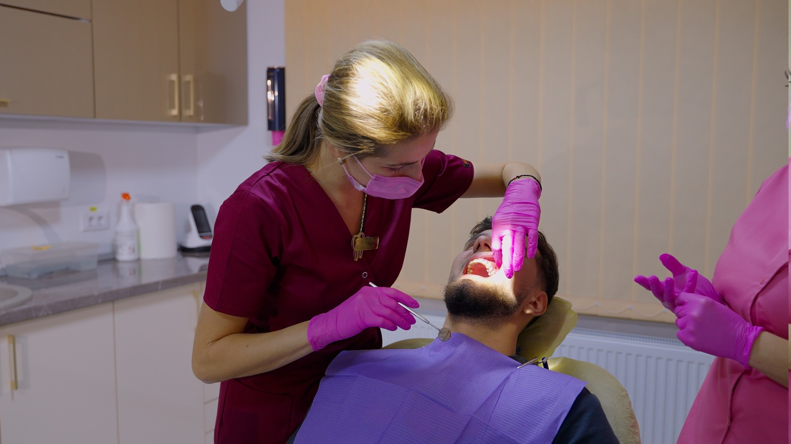

Estetică dentară în Comarnic
Estetica dentară se concentrează pe aspectul zâmbetului, oferind soluții pentru a obține un aspect natural și armonios al dinților. La HopeDent, tratamentele estetice sunt realizate cu materiale de calitate și cu atenție la detaliile individuale ale pacientului.
Consultația estetică include analiza aspectului zâmbetului și discuția despre obiectivele pacientului.
Estetica dentară include albiri, fațete, coroane estetice și remodelări dentare pentru îmbunătățirea aspectului zâmbetului. Este specialitatea care ajută pacienții să obțină un zâmbet frumos și natural, adaptat preferințelor personale.
La HopeDent, fiecare consultație estetică începe cu o analiză detaliată a zâmbetului și cu discuții despre obiectivele pacientului. Pacientul înțelege ce opțiuni are și care sunt rezultatele așteptate pentru fiecare tratament.

Servicii de estetică dentară
În cadrul consultațiilor de estetică dentară, medicul evaluează aspectul zâmbetului și recomandă tratamentele potrivite pentru a obține rezultate naturale și durabile.
Albire dentară
Înlăturarea petelor și obținerea unui zâmbet mai strălucitor prin metode sigure.
Fațete dentare
Învelișuri subțiri pentru corectarea formei, culorii și poziției dinților.
Coroane estetice
Refacerea dinților deteriorați cu coroane care imită aspectul natural al dinților.
Remodelări dentare
Corectarea formei și dimensiunii dinților pentru un aspect armonios.
Închideri diasteme
Tratamentul spațiilor dintre dinți pentru un zâmbet uniform.
Restaurări estetice
Refacerea dinților cu materiale care se integrează perfect cu zâmbetul natural.
Când sunt recomandate tratamentele estetice?
Tratamentul estetic dentar este potrivit pentru persoanele care doresc să îmbunătățească aspectul zâmbetului și să obțină încredere în sine.
Planificare estetică personalizată
La HopeDent, fiecare tratament estetic este planificat individual, cu explicații clare despre rezultatele așteptate și cu opțiuni adaptate bugetului și preferințelor pacientului.
Evaluare
Analiza aspectului zâmbetului și discuția despre obiectivele estetice.
Planificare
Proiectarea zâmbetului dorit și alegerea tratamentelor potrivite.
Tratament
Realizarea procedurilor estetice cu materiale de înaltă calitate.
Îngrijire
Recomandări pentru menținerea rezultatelor estetice pe termen lung.
Când este nevoie de alte tratamente?
În unele cazuri, estetica dentară poate fi completată cu ortodonție, protetică sau alte specialități pentru rezultate optime.
Întrebări frecvente
Cât durează tratamentele estetice?
Durata variază în funcție de complexitatea tratamentului, de la o ședință pentru albire până la câteva săptămâni pentru fațete.
Sunt tratamentele estetice dureroase?
Majoritatea tratamentelor sunt nedureroase, iar disconfortul este minim și gestionabil.
Cât timp durează rezultatele?
Rezultatele sunt durabile cu îngrijire corespunzătoare, dar pot necesita întreținere periodică.
Care este costul tratamentelor estetice?
Costul variază în funcție de tipul tratamentului și materialele folosite; oferim opțiuni pentru diferite bugete.